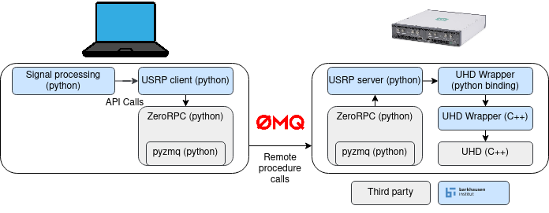

Software Architecture¶
On the laptop (henceforth called “client”), signal processing is performed using python.
Via API calls, configurations are passed to the Usrp Client.
Under the hood, the Usrp client uses a RPC client for performing remote procedure calls. We use ZeroRpc that uses ZeroMQ as a communication protocol. This communication protocol is widely used for high-throughput systems.
On the USRP, we run the RPC server which is managed
by the USRP server.
In order perform the actual calls against the USRP device, we wrapped the UH driver.
To ease the integration into the server, we created a python binding.
In the picture above, third party modules are depicted by grey boxes, whereas custom code is highlighted with blue boxes.